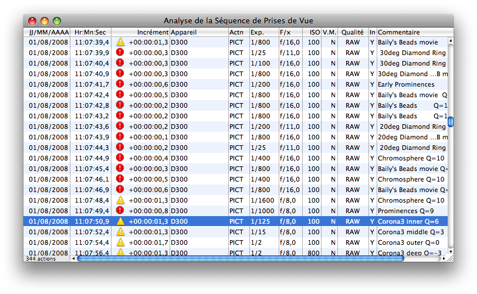
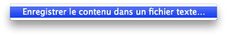

Fenêtre Analyse de la séquence de prises de vue
Pour visualiser la séquence complète de prises de vue de l’éclipse courante, vous pouvez ouvrir la fenêtre Analyse de la Séquence de Prises de Vue dans Lunar Eclipse Maestro. L’information dans la colonne Incrément vous permet de savoir si la prochaine exposition a de bonne chance de pouvoir être exécutée correctement par l’appareil photo numérique concerné.
-
Dans le menu APN sélectionnez Analyseur de séquence de prises de vue…
Les informations disponibles dans cette fenêtre sont automatiquement synchronisées avec celles de la fenêtre principale, c’est-à-dire que si vous modifiez un script et le recharger sans fermer la fenêtre, alors celle-ci sera mise à jour instantanément.

-
La colonne Temps Libre indique le temps disponible entre l’action courante et la précédente en tenant compte de la vitesse de l’obturateur et éventuellement du temps de verrouillage du miroir, mais aussi du temps de latence de l’appareil numérique (durée nécessaire à l’APN pour recevoir et exécuter l’action).
Une valeur inférieure à 1 ou 2 secondes peut être considérée comme suspecte. La valeur minimum acceptable dépend principalement de l’APN, de la résolution de son capteur et de la vitesse en écriture de la carte mémoire utilisée. Les appareils Canon sont généralement capables d’atteindre la seconde et même parfois moins. Par contre les boîtiers Nikon demandent souvent près de deux secondes, sauf le D4 qui lui se contente d’une seconde.
Afin de détecter ces erreurs, il vous est possible de spécifier une valeur minimum qui déclenchera l’affichage d’un indicateur (signe danger ou stop) lorsque que l’espacement entre deux expositions consécutives est trop faible.
-
Un menu contextuel, disponible à l’aide d’un clic droit sur la séquence des expositions, vous permet d’enregistrer celle-ci dans un fichier texte.

|